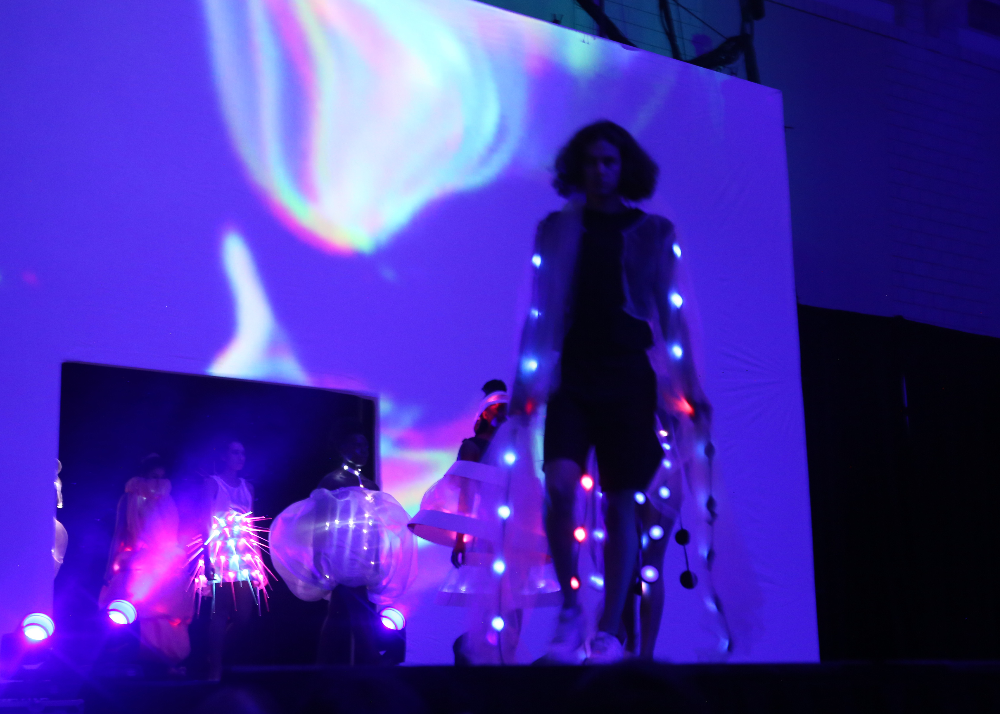
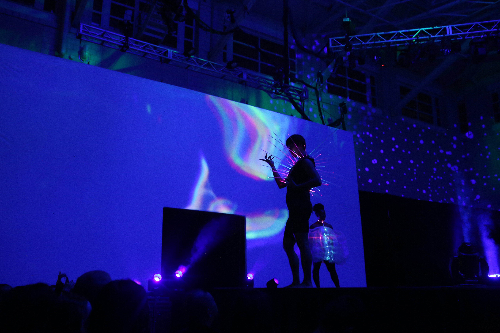
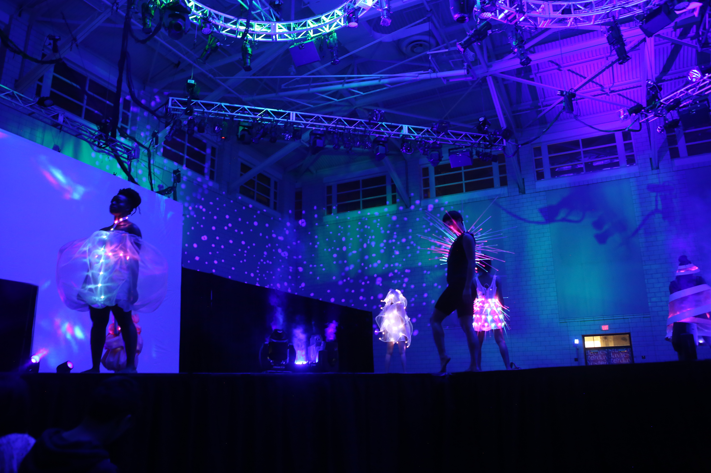
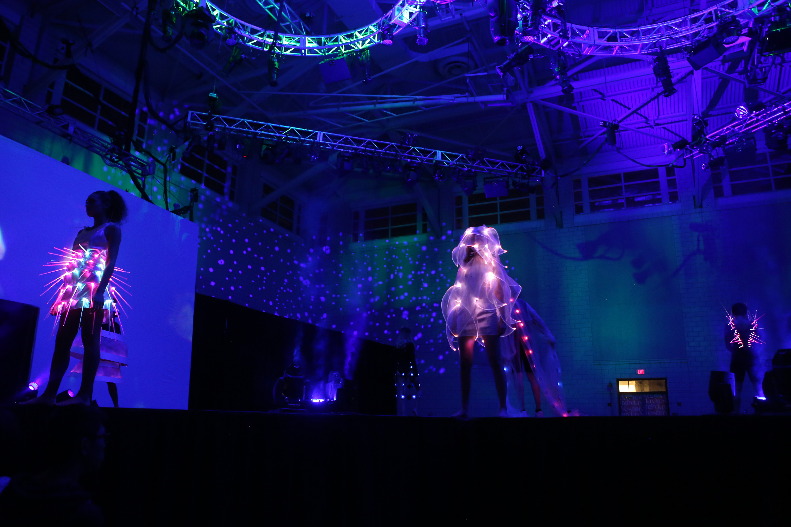
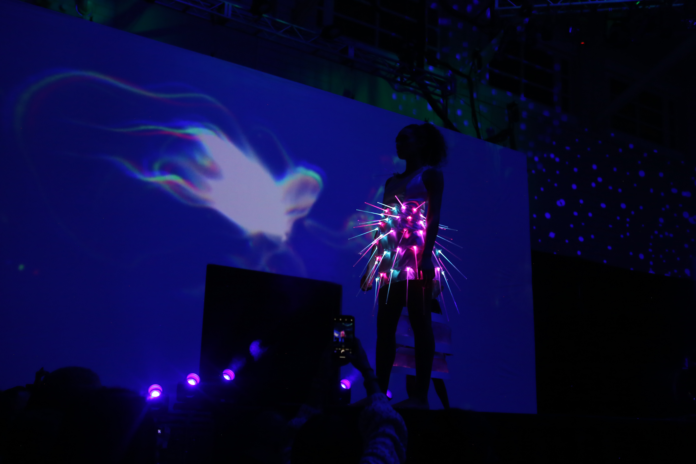
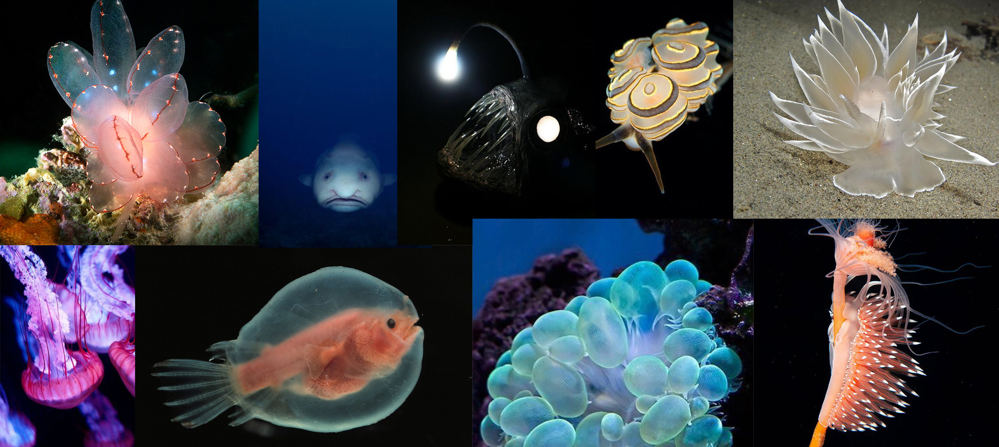
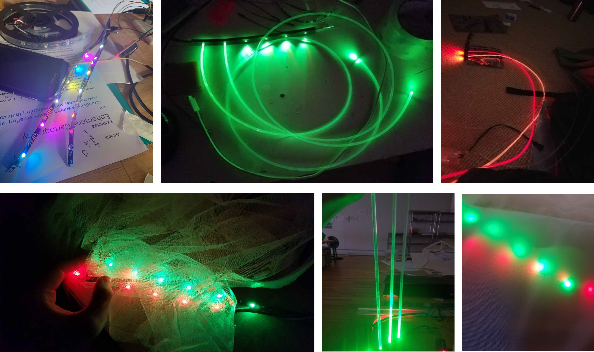
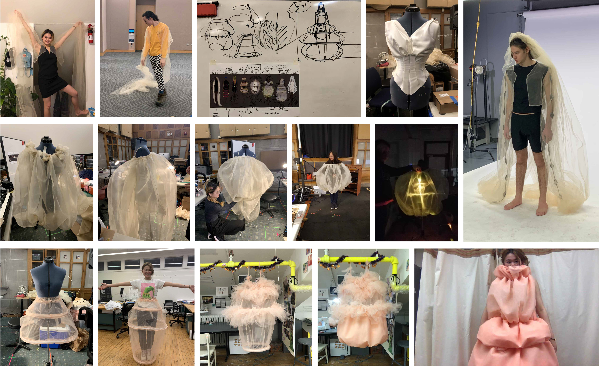
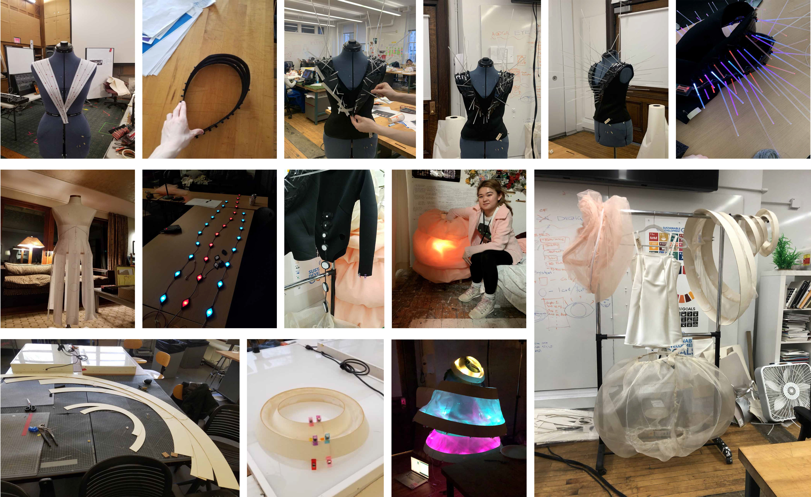
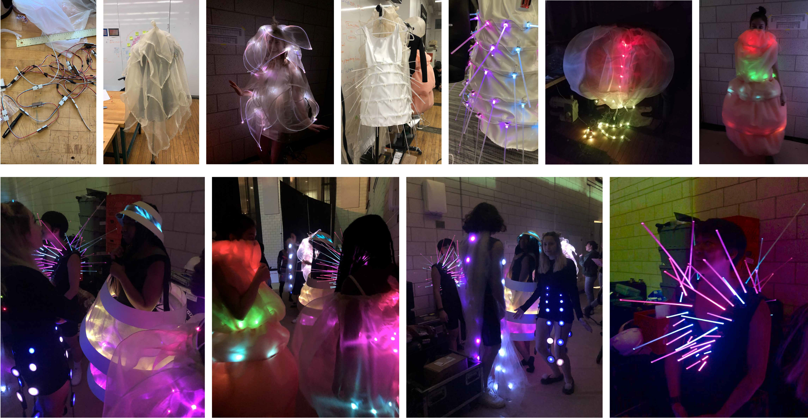

A collaboration with Alice Fang and Sebastian Carpenter.
Zoöid is an exploration of light and color as a means for communication in a starless world. Inspired by deep-sea creatures that use light to communicate and coordinate, the looks in the line create an intricate lightshow on stage.
This project was funded with support by Carnegie Mellon’s Undergraduate Research Office, and the Frank-Ratchye Studio for Creative Inquiry.
    
Inspired by Pyrosomes–deep sea colonies of small animals that use light to communicate and coordinate their actions–we are interested in exploring the ways light-based communication is used to synchronize actions; to achieve this, we want to create wearables that experiment with giving humans the same capabilities. Thus, our medium of dynamic light-based wearables is critical for our exploration, and our use of physical computation, including the development of a data-transfer protocol, is critical to achieving the level of fidelity necessary for our project.

We are hugely inspired by prior work by researchers who create fascinating cutting-edge wearables with real-life implications, such as Electrodermis by Morphing Matter Lab and Digits Nail Technologies. Visually, we are inspired by organic forms, like the work of Iris van Herpen. However, although there are many instances of technologists who create specifically LED wearables, we have struggled to find many compelling examples of pieces that can work collectively. We are attempting to fill a gap in trends that we have observed— although physical computing is becoming more accessible, the use of LED lights in wearables remains at a one-dimensional, ornamental level, without meaningful integration. We want to explore LED wearables from a different angle, not using the lights as the only focus but rather as a medium in which we express an underlying networked system.
With clothing as part of a networked system that works collectively in communication with each other, instead of independent and isolated bodies, possibilities open up to the implications of ubiquitous technology, and the role it can play in future clothing design in the realm of performance, streetwear, disabilities resources and safety methods. For instance, we believe our system could potentially be adapted to benefit large groups working in dark or noisy environments, such as construction workers or firefighters: lights can be used to coordinate roles, and are capable of communicating across distance.
For the process of garment construction, base garments will be constructed with traditional sewing techniques, using tulle, spandex, cotton, and chiffon. The structural parts that house electronics will be created from 3D-printed flexible plastic that will allow us to print flat pieces that can conform to the model’s body. Our outfits use Arduinos and XBees, which allow each outfit to wirelessly communicate with a computer, which processes incoming data, such as music. Based on that data, color schemes and intensities are sent to XBee on each outfit, which receives the color scheme and intensity. We will develop our own protocol for data transfer in order to avoid the computer receiving multiple signals that interfere with each other. Colors change according to instructions received by the XBee, and the outfit will be lit with Adafruit NeoPixel LEDs. The lights will be dispersed through tulle fabric, fiber-optics, or acrylic plastic.
   